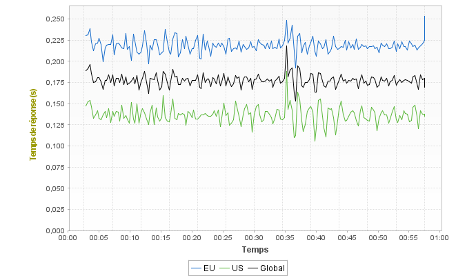
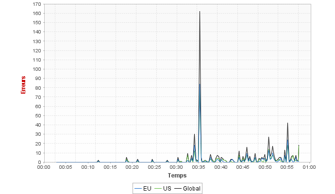

Rapport de Test NeoLoad
Synthèse
Synthèse des Résultats
Synthèse des Statistiques
Points chauds
Erreurs
Alertes
Statistiques générales
Statistiques des transactions
Contexte d'exécution
Serveurs
Cloud
Populations
Parcours Utilisateur
Transactions
Pages
Contenus Médias
Messages push
Moniteurs
Alertes
Scénario
Graphes principaux
Temps de réponse moyen (pages)
Temps de réponse moyen (requêtes)
Temps de réponse moyen (Transactions)
Requêtes par seconde
Erreurs
Débit
Temps de réponse moyen en fonction de la charge
Distribution de la durée des Transactions
Top 10 des premières alertes
Populations
Graphes


Statistiques
Population
Total des Requêtes
Requêtes/s moyen
Tps. de rép. moyen page
Taux d'erreur
EU
508862 (50%)
141,3
0,464s (
+23,1%
)
0,1% (
-1,68%
)
US
509338 (50%)
141,4
0,291s (
-22,81%
)
0,1% (
+1,68%
)
Global
1018200 (100%)
282,7
0,377s
0,1%